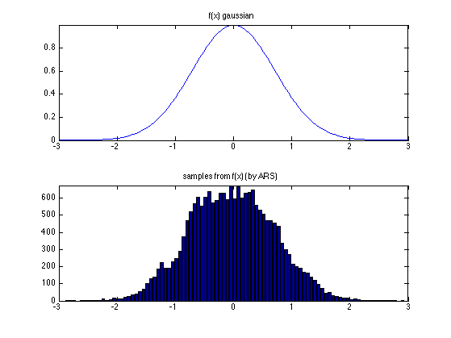
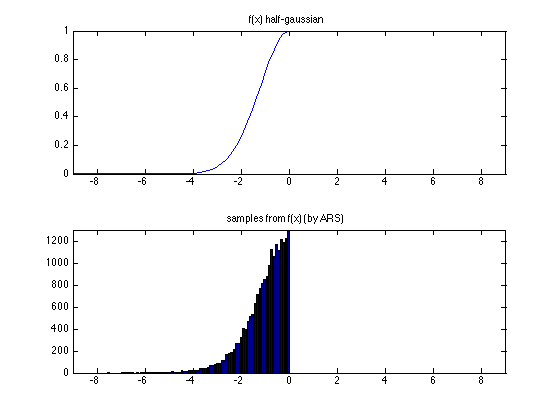
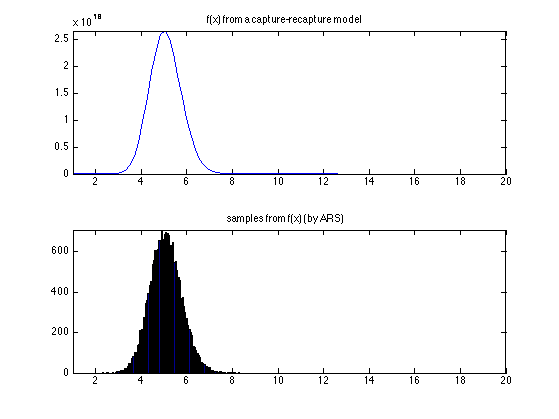

Contents
function arsDemo()
%PMTKauthor Daniel Eaton fprintf('running ARS demo\n');
running ARS demo
example 1
sample from a 1D gaussian
func = inline('log(exp(-x.^2/sigma))','x','sigma'); a = -2; b = 2; % any other a,b st a<0 and b<0 would work too domain = [-inf inf]; nSamples = 20000; sigma = 1; fprintf(sprintf('drawing %i samples from a 1D gaussian\n',nSamples)); samples = ars(func, a, b, domain, nSamples, sigma); figure; subplot(2,1,1); rng = [-3*sigma 3*sigma]; x = rng(1):(rng(2)-rng(1))/(100-1):rng(2); y = exp(func(x,sigma)); plot(x, y); axis([ rng(1) rng(2) 0 max(y)]); title('f(x) gaussian'); subplot(2,1,2); [N x] = hist(samples,100); bar(x, N); axis([ rng(1) rng(2) 0 max(N)]); title('samples from f(x) (by ARS)'); drawnow
drawing 20000 samples from a 1D gaussian
example 2
sample from a 1D "half-gaussian" (0 for positive x)
%func = inline('log(exp(-x.^2/sigma)).*(1*(x<=0)+1e300*(x>0))','x','sigma'); func = inline('log(exp(-x.^2/sigma)).*(1*(x<=0)+0*(x>0))','x','sigma'); a = -2; b = 0; domain = [-inf, 0]; nSamples = 20000; sigma = 3; fprintf(sprintf('drawing %i samples from a 1D half-gaussian\n',nSamples)); samples = ars(func, a, b, domain, nSamples, sigma); figure; subplot(2,1,1); rng = [-3*sigma 3*sigma]; x = sort([rng(1):(rng(2)-rng(1))/(100-1):rng(2) 0]); y = exp(func(x,sigma)); plot(x, y); axis([ rng(1) rng(2) 0 max(y)]); title('f(x) half-gaussian'); %printPmtkFigure('arsDemoTruth') subplot(2,1,2); %figure; [N x] = hist(samples,100); bar(x, N); axis([ rng(1) rng(2) 0 max(N)]); title('samples from f(x) (by ARS)'); printPmtkFigure('arsDemo') drawnow
drawing 20000 samples from a 1D half-gaussian
example 3, more exotic
conditional distribution function from gibbs sampling of a capture-recapture model
func = @exFunc; a = 1; b = 20; domain = [1, inf]; nSamples = 20000; beta = 10; p = rand(14,1); fprintf(sprintf('drawing %i samples from a more exotic distribution\n',nSamples)); samples = ars(func, a, b, domain, nSamples, beta, p); figure(3); clf; subplot(2,1,1); rng = [1 20]; x = sort([rng(1):(rng(2)-rng(1))/(100-1):rng(2) 0]); y = exp(func(x,beta,p)); plot(x, y); axis([ rng(1) rng(2) 0 max(y)]); title('f(x) from a capture-recapture model'); subplot(2,1,2); [N x] = hist(samples,100); bar(x, N); axis([ rng(1) rng(2) 0 max(N)]); title('samples from f(x) (by ARS)');
drawing 20000 samples from a more exotic distribution
function v = exFunc(alpha, beta, p) % example log-concave function from the model of: % E. I. George and C. P. Robert. Capture-recapture estimation via Gibbs % sampling. Biometrika, 79:677--683, 1992. % the conditional distribution of the hierarchial parameter alpha, given % the other model parameters % % the conditional is complicated (and not analytically normalizable), % but turns out to be log-concave % % the domain is [1, infinity] % % returns the log of p(alpha|beta,N,p,D) = p(alpha|beta,p) I = length(p); for vi=1:length(alpha) v(vi) = I*(gammaln(alpha(vi)+beta)-gammaln(alpha(vi))-gammaln(beta)); v(vi) = v(vi) + alpha(vi)*sum(log(p)) -2*log(alpha(vi)+beta); end